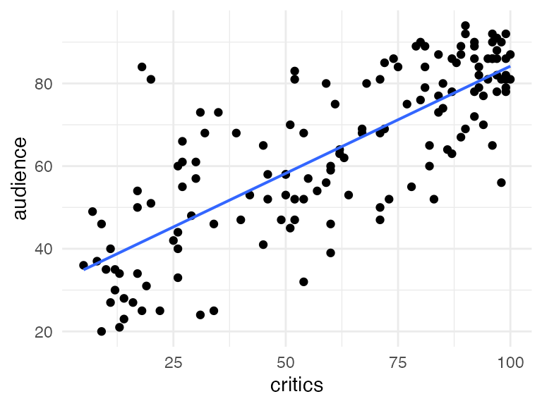

movies <- read.csv("https://aloy.github.io/stat230-materials/data/movie_scores.csv")
gf_point(audience ~ critics, data = movies) |>
gf_lm()
Stat 230 - Spring 2026
Practice questions for each skill on the Exam01 Review sheet.
Example question In the Day 2 activity, we explored the relationship between audience score and critics score for a sample of movies. Here is the scatterplot we looked at:
movies <- read.csv("https://aloy.github.io/stat230-materials/data/movie_scores.csv")
gf_point(audience ~ critics, data = movies) |>
gf_lm()
What is the response variable? What is the explanatory variable?
Write out the theoretical SLR model for this relationship. Define \(Y_i\) and \(x_i\) in context, include all parameters, and state the assumption placed on the error term.
\(Y_i = \beta_0 + \beta_1 x_i + \varepsilon_i\), where \(Y_i\) is the audience score for movie \(i\), \(x_i\) is the critics score for movie \(i\), \(\beta_0\) and \(\beta_1\) are the (unknown) population intercept and slope, and \(\varepsilon_i \overset{iid}{\sim} N(0, \sigma^2)\).
Example question The Day 3 activity fit a model relating leaf width (Width, in mm) to Year for a sample of 252 leaves, giving the coefficient estimates below.
| term | estimate |
|---|---|
| (Intercept) | 37.723 |
| Year | -0.018 |
Write out the fitted SLR model using proper notation.
\(\widehat{\text{Width}}_i = 37.723 - 0.018 \times \text{Year}_i\)
Note there’s no error term in the fitted model – \(\widehat{Y}_i\) is a single predicted value, not a random variable, so there’s nothing left to place a distributional assumption on.
LeafWidth <- read_csv("https://aluby.github.io/stat230/data/LeafWidth.csv")
leaf_mod <- lm(Width ~ Year, data = LeafWidth)Example question Using the fitted model (\(\widehat{\text{Width}}_i = 37.723 - 0.018 \times \text{Year}_i\)), interpret the slope and intercept in context.
Slope: For each additional year, the model predicts an average decrease of 0.018 mm in leaf width.
Intercept: In year 0, the model predicts an average leaf width of 37.723 mm. This is an extreme extrapolation – the data only cover a narrow, recent range of years – so this interpretation isn’t meaningful in context.
Example question For the LeafWidth model above, predicting Width from Year has \(R^2 = 0.06\). Which of the following is the best interpretation of this value?
(c) – \(R^2\) is the proportion of variability in the response explained by the model. (Watch out for (d): \(r = \sqrt{R^2}\) – \(R^2\) and \(r\) are related but not equal.)
Example question For each statement below, circle TRUE or FALSE.
Example question Suppose you fit a model predicting income from education for the Riverview data, and the residuals-vs-fitted plot shows a clear curved (U-shaped) pattern. Which of the following can you still trust about this model? Select all that apply, and explain your reasoning.
None of these should be trusted. A curved residual pattern means the linearity condition is violated – a straight line is the wrong shape for this relationship. That makes the point estimate itself misleading, not just the inference built on top of it, so the p-value, standard error, and any predictions are all compromised too.
Example question The LeafWidth model gives the following output:
broom::tidy(leaf_mod) |>
knitr::kable(digits = 3)| term | estimate | std.error | statistic | p.value |
|---|---|---|---|---|
| (Intercept) | 37.723 | 8.575 | 4.399 | 0 |
| Year | -0.018 | 0.004 | -4.029 | 0 |
On \(n = 252\) data points. Conduct a hypothesis test for \(H_0: \beta_1 = 0\) vs. \(H_A: \beta_1 \ne 0\). State the test statistic, and describe (without necessarily calculating exactly) how the p-value could be found.
\(t = \dfrac{-0.018 - 0}{0.004} \approx -4.0\)
The p-value is the two-sided tail area beyond \(t = \pm 4.0\) under a \(t\)-distribution with \(df = 250\): \(P(T \le -4.0) + P(T \ge 4.0)\). Since \(t \approx -4.0\) is far in the tail, this p-value will be very small (R reports it as \(7.43\times 10^{-5}\)), giving strong evidence that \(\beta_1 \ne 0\).
Example question Before collecting the NHANES sitting-time data, a researcher hypothesizes that more sitting time is associated with a higher depression risk score – not just a difference in either direction. The fitted model (dep_score ~ sedentary_hours) gives a slope of 0.0314 (SE = 0.0116) for sedentary_hours, with \(df = 657\).
summary()) the correct one to use here? If not, explain how you would find the correct p-value.\(H_0: \beta_1 = 0\) vs. \(H_A: \beta_1 > 0\)
No – R’s default p-value is two-sided, but the researcher’s hypothesis is one-sided. Since the test statistic (\(t = 0.0314/0.0116 \approx 2.71\)) is positive, in the direction of \(H_A\), the correct one-sided p-value is half of R’s reported two-sided p-value.
Example question Recall Movies model: lm(audience ~ critics) gives a slope estimate of 0.519 (SE = 0.0345), with \(df = 144\).
qt() output below, report the correct \(t^*\) value to use rounded to 3 decimal placesqt(.01, df = 144, lower.tail = FALSE)[1] 2.352522qt(.025, df = 144, lower.tail = FALSE)[1] 1.976575qt(.05, df = 144, lower.tail = FALSE)[1] 1.655504qt(.1, df = 144, lower.tail = FALSE)[1] 1.287458You should use qt(.05, df = 144): 1.656
\(0.519 \pm 1.656 \times 0.0345 \;\Longrightarrow\; (0.462, \; 0.576)\)
Example question Recall Riverview model using standardized education: income ~ scale(education) gives a slope estimate of 11.567 (SE = 1.613), with \(df = 30\). For a 95% confidence interval, use a critical value is $t^* = 2.
It may also be helpful know that the income has a mean of 53.7 and a SD of 14.5. education has a mean of 16 and a SD of 4.36.
\(11.567 \pm 2 \times 1.613 \;\Longrightarrow\; (8.83, \; 14.8)\)
We are 95% confident that for each one-SD increase in education (about 4.36 years), average income increases by between $8,829 and $14,305 (8.829 and 14.305 thousand dollars).
Example question Using the movies model, we predict the audience score for a movie with a critics score of 75. The point estimate is 71.2, and R produces two 90% intervals: (50.4, 92.1) and (69.3, 73.1).
(69.3, 73.1) is the confidence interval – it’s narrower, since it only accounts for uncertainty in the average audience score at critics = 75. (50.4, 92.1) is the prediction interval – it’s wider, since it also accounts for the extra variability of one individual movie’s score around that average.
The prediction interval, (50.4, 92.1), since we’re predicting a single new movie’s score, not an average.
The other inerval is the confidence interval. This gives the interval for the average audience score for all movies with a critics score of 75.
Example question A researcher wants to use the NHANES dep_score ~ sedentary_hours model to make a claim about people who sit 6 hours per day. Explain which interval (confidence or prediction) is appropriate for each scenario below, and briefly say why.
A prediction interval – this is about one individual, whose depression risk score could be far from the average even if we knew the average perfectly.
A confidence interval – this is about a population average, which only requires accounting for uncertainty in where the regression line is, not individual-level variability. The confidence interval will be substantially narrower than the prediction interval for the same \(x\) value.
Example question Instead of the raw PHQ-9 depression score, we actually used dep_score, defined as \(\log(\text{PHQ-9} + 1)\). The fitted model is dep_score ~ sedentary_hours, with intercept 0.904 and slope 0.0314.
dep_score, not the raw PHQ-9 score.\(\widehat{\text{dep\_score}}_i = 0.904 + 0.0314 \times \text{sedentary\_hours}_i\), where \(\text{dep\_score}_i = \log(\text{PHQ-9}_i + 1)\).
The model was fit on the log-transformed PHQ-9 score, not the raw PHQ-9 score, so “0.0314” describes a change in \(\log(\text{PHQ-9}+1)\), not a change in PHQ-9 itself – the usual slope interpretation doesn’t carry over once you’ve transformed the response. Corrected: “for every one-hour increase in sitting time, the model predicts an average increase of 0.0314 in depression risk score (the log-transformed PHQ-9 measure).”
Example question Suppose instead of transforming the response, we wanted to write out the general theoretical model for a log-transformed response, where \(Y_i\) is the raw response and \(x_i\) is the explanatory variable.
\(\log(Y_i) = \beta_0 + \beta_1 x_i + \varepsilon_i\), where \(\varepsilon_i \overset{iid}{\sim} N(0, \sigma^2)\). (Note: \(\varepsilon_i\)’s Normal/equal-variance assumptions now apply on the log scale, not the original scale of \(Y\).)
A log transformation can help address a right-skewed response and/or non-constant variance in the residuals (e.g., PHQ-9 scores were heavily right-skewed, with many zeros and a long tail of high scores) – both violations of the SLR conditions on the original scale.